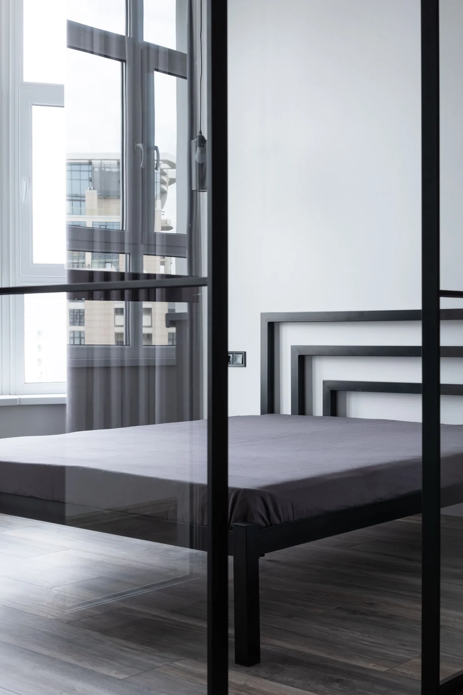

LE VERRE SOUS TOUTES SES FORMESRéférences produits
01VERRE
02FENÊTRES DE TOIT
03MENUISERIES
04ASSEMBLAGE

LE DÉROULEMENT DE VOTRE DEMANDE
Des étapes précises. Des conditions confirmées.
Un échange préparé permet d’identifier la solution adaptée à votre logement ou à votre local professionnel.
01
Décrire la situation
Vitrage endommagé, dimensions, type de fenêtre ou projet d’installation.
02
Préciser les contraintes
Adresse, accès, photos disponibles et délai souhaité.
03
Confirmer la proposition
Le professionnel confirme la solution, le devis et les conditions avant votre accord.
LE RÉSEAU LA BOÎTE À MOUSTACHES
Une mise en relation pour votre projet.
Vitrier Paris Express prépare votre demande et vous met en relation avec les artisans partenaires du réseau. Le professionnel examine ensuite les conditions de réalisation.
Simple vitrage, double vitrage et solutions sur mesure : le choix dépend des dimensions, de votre menuiserie et de l’usage du verre.
Que préparer pour un devis ?
Votre adresse, les dimensions approximatives, le type de vitrage et des photos prises sans s’approcher des éclats de verre.
Peut-on obtenir une mise en sécurité ?
Décrivez le bris de glace et les risques d’accès au téléphone pour organiser une solution temporaire et le remplacement adapté.
Quel délai pour le remplacement ?
Il dépend des dimensions, du verre et de sa fabrication. Le délai précis et une éventuelle protection temporaire sont confirmés avec le professionnel.
Intervenez-vous sur les fenêtres ?
Oui : pose de fenêtres, réglages et remplacement de crémones. Précisez le matériau de votre fenêtre et les symptômes pour préparer la demande.
Mon assurance peut-elle intervenir ?
Vérifiez la garantie bris de glace, la franchise et les conditions de prise en charge directement auprès de votre assureur avant l’intervention. Un remboursement ne peut pas être garanti en ligne.
 VERRE
VERRE